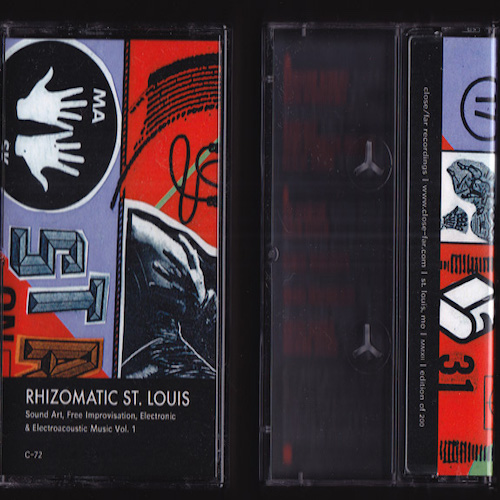
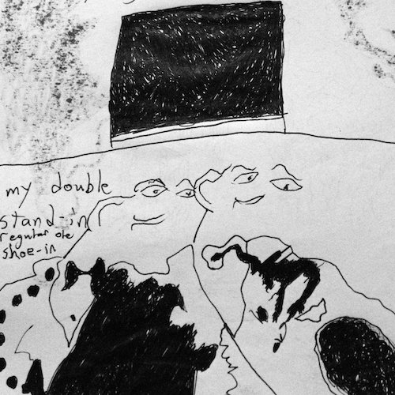
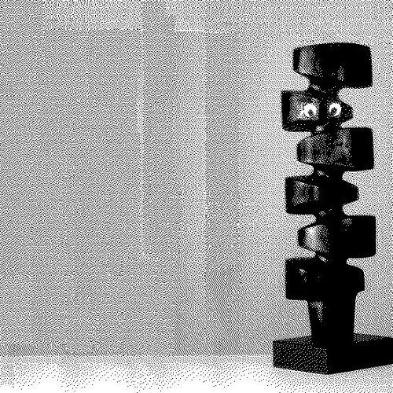

2012
<a href="http://humanconduct.bandcamp.com/album/lovers-cove">Lover's Cove by Global Distance</a>

RHIZOMATIC ST. LOUIS VOL. I
v/a

<a href="http://dinnermusic.bandcamp.com/album/kissing-cousins">Kissing Cousins by Rick Weaver</a>

<a href="http://humanconduct.bandcamp.com/album/dirty-doubler">Dirty Doubler by Inner Fare</a>


![Global Distance present their Realm Play called Lover's Cove released on Realm Play Media Rick and Rick as Nectar and Sap aka the Cove Bros: A1 Nectar & Sap A2 The Cove Bros. Moisten the Hut, Place it Inside of a Sack, Burn the Burlap, & Toss it in the Nook of Frenzy A3 I'm Dancing (My Troubles Away)A4 I Don't Like My Feet A5 Ugly Mountain Spring or Cheap Harp In The Misty Green B1 The Slosher Invites Himself to His Own Party, Shaking Coconut B2 Travel Agent B3 Mosquito B4 Iron Environs B5 Bumper's Sermon B6 Little Moments Matter (the Drought) B7 Moist Movements in the Ocean of Bliss B8 See Look: Leaving the Body, Keeping the Fins B9 The Secret of the Lover's Cove. August 08 2012](assets/img/loverscove.jpg)
![Inner Fare (Jeff Zagers, Rick Weaver) compilation titled Dirty Doubler released on Human Conduct -- The first side is an excerpt of our seemingly endless drums on tape composition entitled 'Dirty Doubler.' Also bearing the name of Dirty Doubler is a sound installation, a Family Visions movie, an object (or two), and a festival in St. Louis. The second side is an introduction to the Inner Fare code of conduct. Musical moments captured between our initial 'meeting of the minds' in Mt. Airy, Maryland, May 2009 up until a Florida excursion laced with pure luck in February 2011. original press c92 was limited to 30 copies - cameos by Alex Hampshire Ben Kelley Noah Anthony Kylie Lance. January 2012](assets/img/innerfare.jpg)